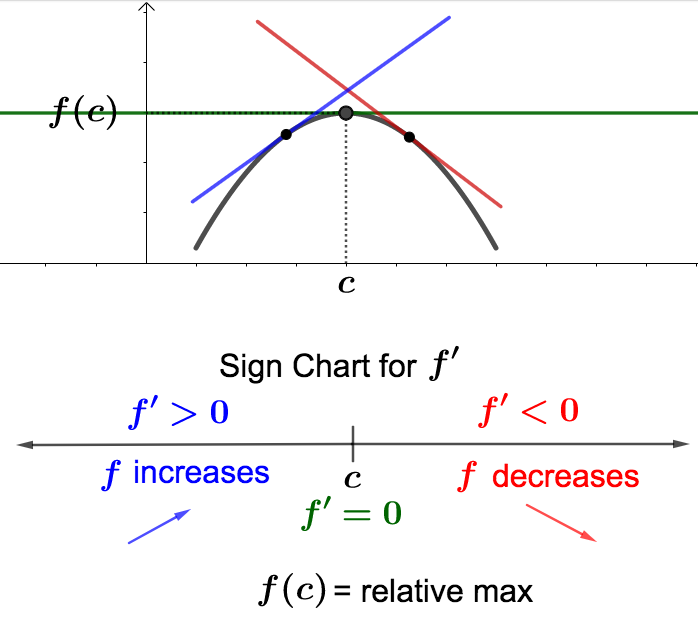
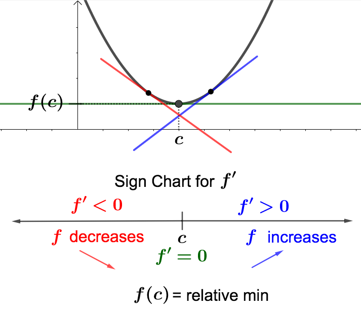
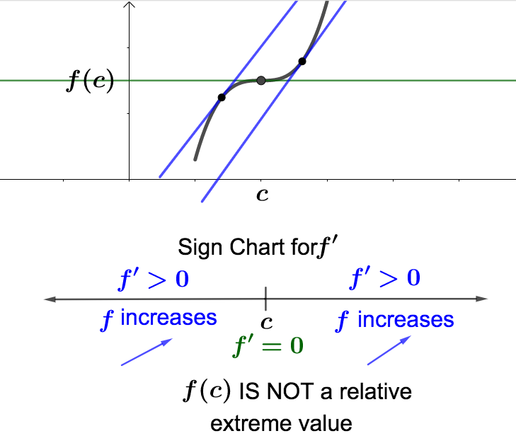
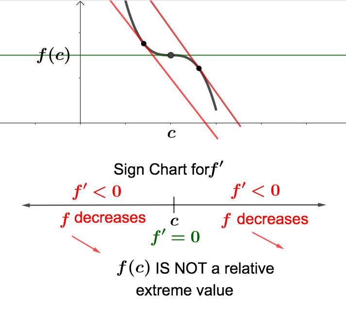
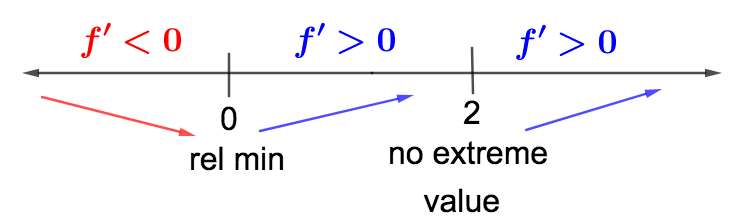
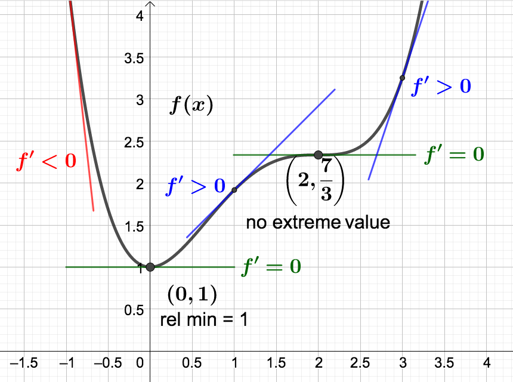
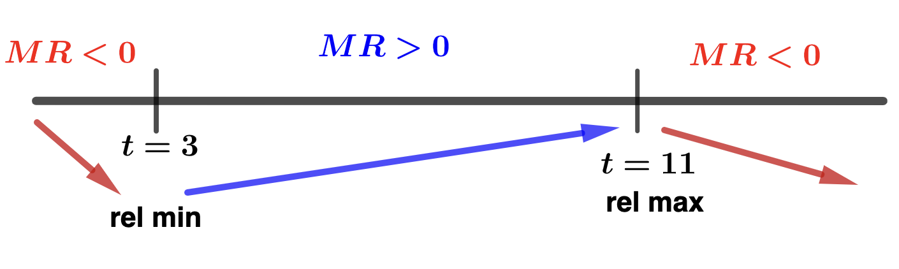
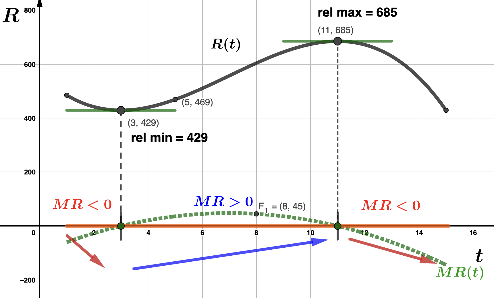
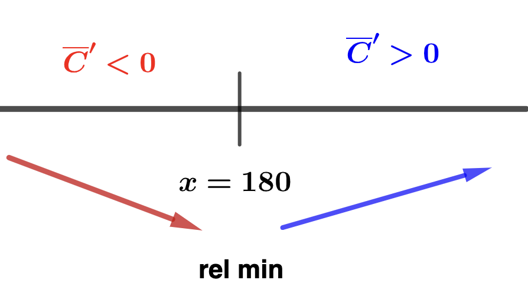

Section 3.7 The First Derivative Test
To find the relative extreme values of a function \(f\) we first need to find the critical numbers for \(f\) (by solving \(f'(x) = 0\)) and then determining if \(f'\) changes sign (from positive to negative or vice versa) on either side of the critical number. This information is recorded in a sign chart for the first derivative.
Let \(x=c\) be a critical number of \(f\) with \(f'(c) = 0\text{.}\) Below are the four possibilities for what a sign chart for \(f'\) could look like around \(c\text{,}\) with a corresponding graph for \(f\text{.}\)


The pictures above illustrate what happens in case the critical number \(x=c\) produces a relative extreme value. Below are illustrations for what happens when no relative extreme values exist at the critical number.


Finding relative extreme values for a function using a sign chart for its derivative is what we will refer to as using the first derivative test.
We will use the first derivative test by making a sign chart for \(f'(x)\text{.}\) First we need the critical numbers of \(f\text{.}\) These numbers must be in the domain of \(f\text{,}\) so first note that dom(\(f\)) \(= (-\infty, \infty)\text{.}\) Next, we solve \(f'(x) = 0\text{.}\) Note that \(f'(x) = x^3 - 4x^2+4x\text{.}\) So,
\begin{align*}
f'(x) \amp = 0 \\
x^3 - 4x^2+4x \amp =0 \\
x(x^2 -4x +4) \amp = 0 \\
x(x-2)^2 \amp = 0
\end{align*}
We find two critical numbers: \(x=0\) and \(x=2\text{.}\) We can algebraically check the sign of the derivative, \(f'\text{,}\) by picking test values in the appropriate intervals determined by the critical numbers: - In the interval \((-\infty, 0)\) we can test with \(x = -1\text{:}\)\begin{equation*} f'(-1) = (-1)(-1-2)^2 < 0 \end{equation*}
- In the interval \((0,2)\) we can test with \(x = 1\text{:}\)\begin{equation*} f'(1) = (1)(1-2)^2 > 0 \end{equation*}
- In the interval \((2, \infty)\) we can test with \(x = 3\text{:}\)\begin{equation*} f'(3) = (3)(3-2)^2 > 0 \end{equation*}

Using our sign chart, we can now answer the questions. - \(f(x)\) is increasing on the intervals \((0, 2)\) and \((2,\infty)\text{.}\)
- \(f(x)\) is decreasing on the interval \((-\infty, 0)\text{.}\)
- \(f(x)\) has no relative maximum value.
- \(f(x)\) has a relative minimum at \(x=0\text{.}\) The relative minimum value is \(f(0) = 1\text{.}\)

Example 3.7.2.
\begin{equation*}
R(t) = -t^3+21t^2-99t+564
\end{equation*}
valid for \(1 \leq t \leq 15 \) where \(t\) is the number of years since 2004. Take a moment to identfiy the input and output variables and write a sentence to interpret each. - Write the domain of \(R(t)\) in interval notaion and determine what years Kruger's revenue function is value. Solution.In interval notation, dom(\(R\)) \(= [1,15]\text{,}\) which means Kruger's revenue function is valued from 2005 through 2019.
- Determine Kruger's revenue in 2009 and write a sentence to interpret. Solution.Since 2009 corresponds to \(t=5\) and \(R(5)=469\text{,}\) we see that Kruger's revenue in 2009 was $46,900,000.
- Deternime Kruger's marginal revenue in 2012 and write a sentence to interpret its meaning. Solution.Since \(MR(t) = R'(t)= -3t^2 +42t-99\) and 2012 corresponds to \(t=8\text{,}\) we have that \(MR(8) = 45\text{.}\) This means that in 2012 Kruger's revenue was increasing at an approximate rate of $4,500,000 per year. Meaning, Kruger expects to gernerate $4,500,000 more revenue in 2013 than in 2012.
- Find the critical numbers of \(R(t)\) and identify the corresponding years for these values. Solution.To find the critical numbers we solve \(R'(t)=MR(t) = 0\text{,}\) keeping only those that are in the interval \([1,15]\text{.}\)\begin{align*} MR(t) \amp = 0 \\ -3t^2 +42t-99 \amp = 0 \\ -3(t^2-14t+33) \amp = 0 \\ -3(t-3)(t-11) \amp = 0 \end{align*}and find two critical values, \(t = 3\) and \(t = 11\text{,}\) both of which are in \([1,15]\text{.}\) These critical values correspond to 2007 and 2015.
- Make and interpret a sign chart for \(R'(t) = MR(t)\text{.}\) Solution.
- In the interval \([1, 3)\) we can test with \(t = 2\text{:}\)\begin{equation*} MR(2) = -3(2-3)(2-11) < 0 \end{equation*}
- In the interval \((3,11)\) we can test with \(t = 10\text{:}\)\begin{equation*} MR(10) = -3(10-3)(10-11) > 0 \end{equation*}
- In the interval \((11, 15]\) we can test with \(t = 12\text{:}\)\begin{equation*} MR(12) = -3(12-3)(12-11) < 0 \end{equation*}
From the sign chart we can see that:- Kruger's revenue decreased from 2005 (\(t=1\)) to 2007 (\(t=3\)) and then again from 2015 (\(t=11\)) to 2019 (\(t=15\)).
- Kruger's revenue increased from 2007 (\(t=3\)) to 2015 (\(t=11\)).
- Since \(R(3) = 429\text{,}\) Kruger had a relaive minimum revenue of $42,900,000 in 2007.
- Since \(R(11) = 685\text{,}\) Kruger had a relaive maximum revenue of $68,500,000 in 2015.
- Graphical exploration: Graph \(R(t)\) and \(MR(t)\text{.}\) Make sure you understand how your work above corresponds to these graphs. Solution.\(MR(t)\) is the green dotted graph. Overserve that the sign chart is also included in the graph below. Notice how that the sign of \(MR(t)\) corresponds to whether the graph is above or below the \(t\)-axis, how the graph of \(R(t)\) follows the blue and red arrows in the sign chart, and that the critical values are the intercepts for \(MR(t)\text{,}\) as well as the location for the relative extreme values of \(R(t)\text{.}\)
Example 3.7.3.
\begin{equation*}
C(x) = 32,400 + 800x+x^2.
\end{equation*}
- Find both the average cost and marginal cost functions. Solution.We start with the average cost function, \(\overline{C}(x)\text{.}\)\begin{align*} \overline{C}(x) \amp = \frac{C(x)}{x} \\ \\ \overline{C}(x) \amp = \frac{32,400 + 800x+x^2}{x} \\ \\ \overline{C}(x) \amp = 32,400x^{-1} + 800 + x \end{align*}Since \(MC(x) = C'(x)\text{,}\) the marginal cost function is\begin{equation*} MC(x) = 800 + 2x. \end{equation*}
- Find and interpret the average cost and marginal cost when 2,000 iOONs are produced. Solution.Let's first calculate the average cost.\begin{align*} \overline{C}(2,000) \amp = \frac{C(2,000)}{2000} \\ \\ \overline{C}(2,000) \amp = \frac{5,632,400}{2,000} \\ \\ \overline{C}(2,000) \amp = 2,816.2 \end{align*}Hence, the average cost when ADTF Distributors produces 2,000 iOONs is $2,816.2 per iOON. To find the margincal cost we evaluate the derivative of the cost function at \(x=2,000\text{.}\)\begin{align*} MC(2,000) \amp = 800 + 2(2,000) \\ MC(2,000) \amp = 4,800 \end{align*}This means that when \(x=2,000\) iOONs are produced, ADTF Distributors' costs are increasing at an approximate rate of $4,800 per additioanl iOON. That is, the cost of the 2,001\(^\textrm{st}\) iOON is approximately $4,800 more than the 2,000\(^\textrm{th}\) iOON.
- Use the first derivate test to minimize ADTF Distributors' average cost. Solution.We start by finding the critical values for \(\overline{C}(x)\text{.}\) To do this we must solve \(\overline{C}'(x) = 0\text{.}\) First observe that\begin{equation*} \overline{C}'(x) = 1 -32,400x^{-2} = \dfrac{x^2-32,400}{x^2}\text{.} \end{equation*}So,\begin{align*} \overline{C}'(x) \amp = 0 \\ \\ \frac{x^2-32,400}{x^2} \amp = 0 \\ \\ x^2 - 32,400 \amp = 0 \\ \\ (x-180)(x+180) \amp = 0 \end{align*}Since dom(\(\overline{C}(x)\))\(= (0, \infty)\text{,}\) the only cirtical number we find is \(x=180\text{.}\) Now we make a sign chart for \(\overline{C}'(x)\) to confirm that \(x=180\) minimizes average cost.
- In the interval \((0, 180)\) we can test with \(x = 1\text{:}\)\begin{equation*} \overline{C}'(1) = \frac{(1-180)(1+180)}{1^2} < 0 \end{equation*}
- In the interval \((180, \infty)\) we can test with \(x = 181\text{:}\)\begin{equation*} \overline{C}'(181) = \frac{(181-180)(181+180)}{180^2} > 0 \end{equation*}
From our sign chart we conclude- ADTF Distributors' avaerage cost decreased on the interval \((0,180)\text{.}\)
- ADTF Distributors' avaerage cost increased on the interval \((180,\infty)\text{.}\)
- ADTF Distributors has a relative minimum average cost when they produce \(x=180\) iOONs. Their minimum average cost is \(\overline{C}(180) = 1,160 \) (dollars per iOON) per iOON.
We will return to this type of application after we discuss absolute extreme values.